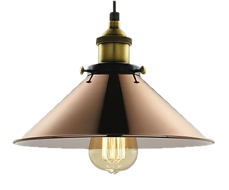
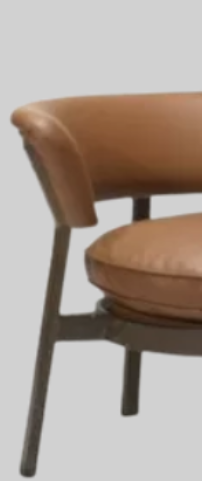
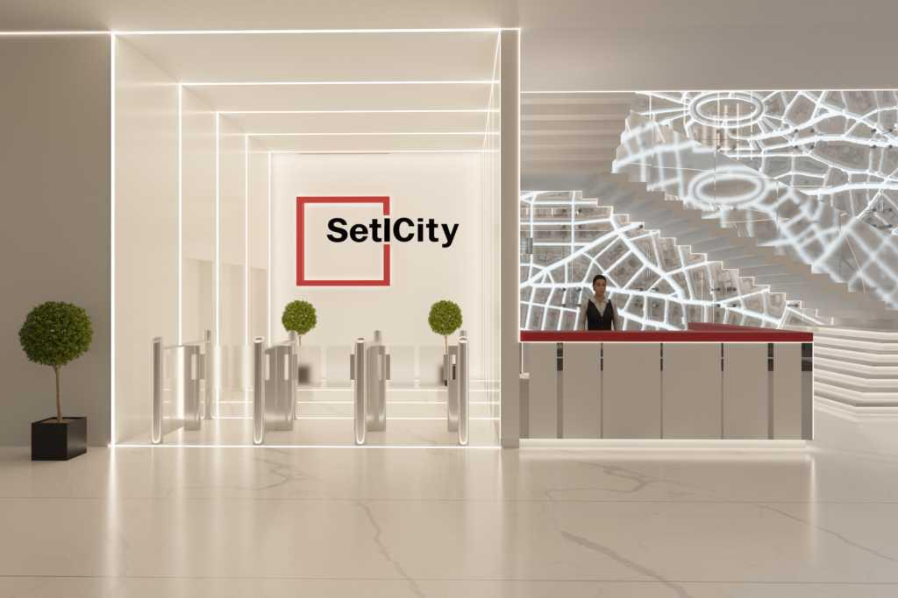
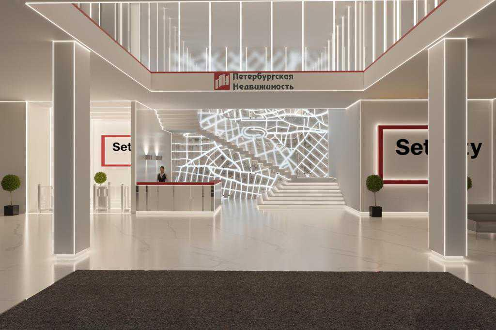
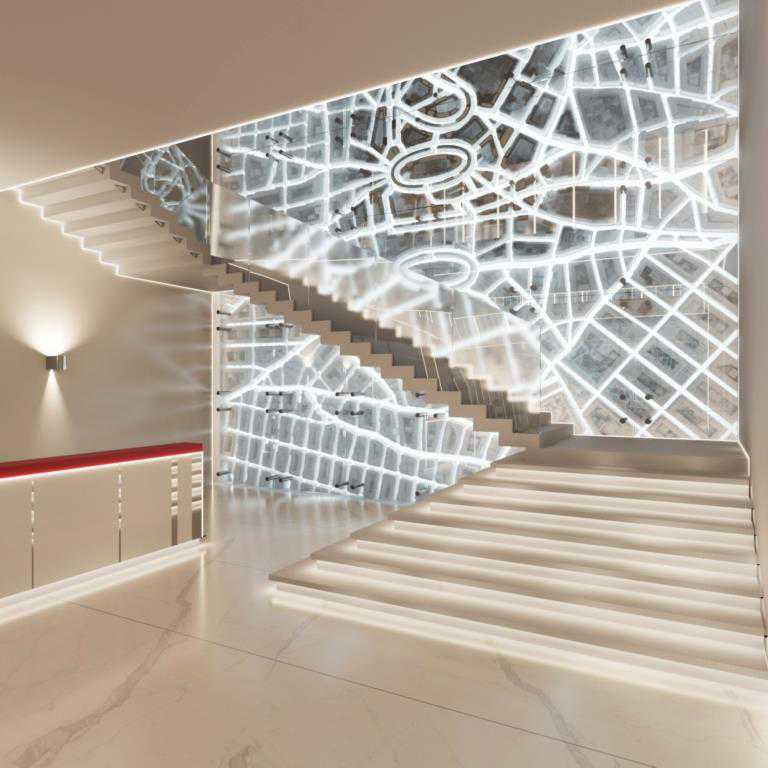
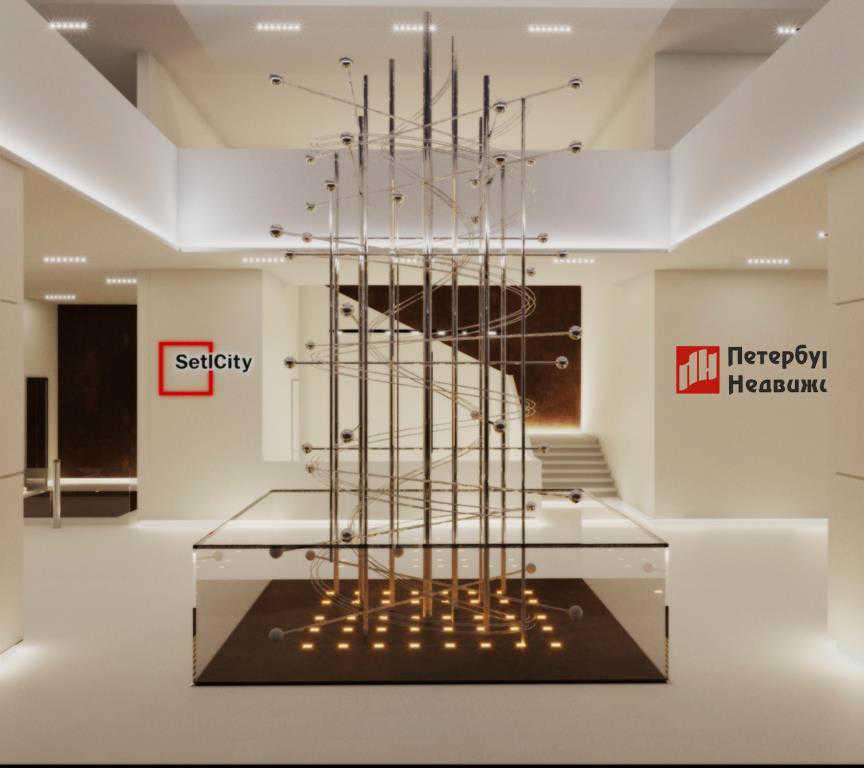
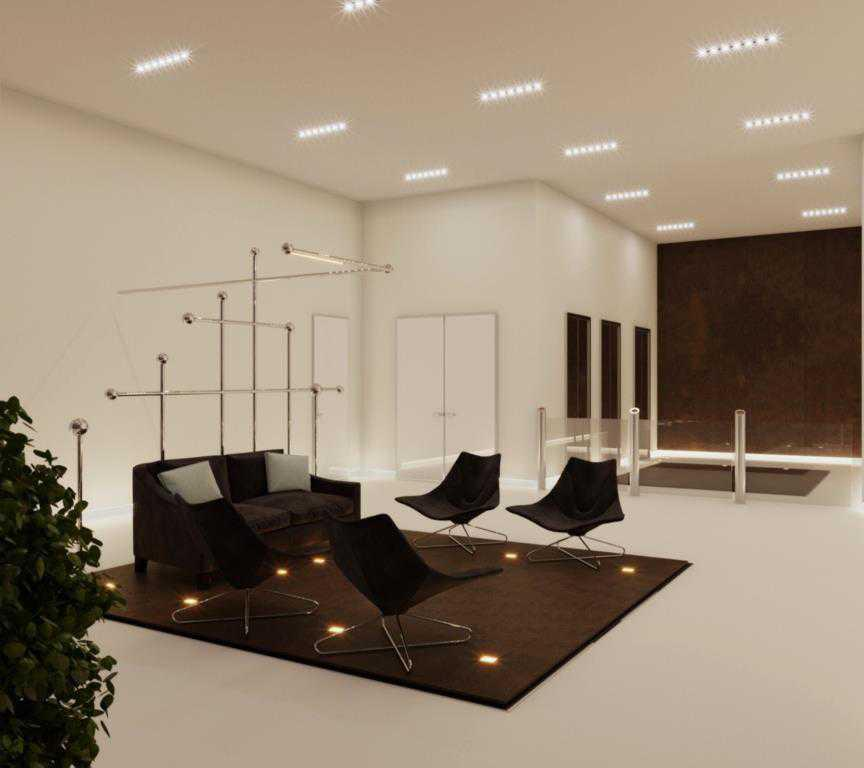
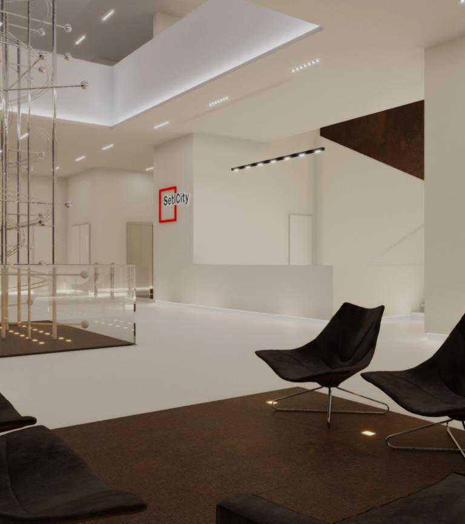
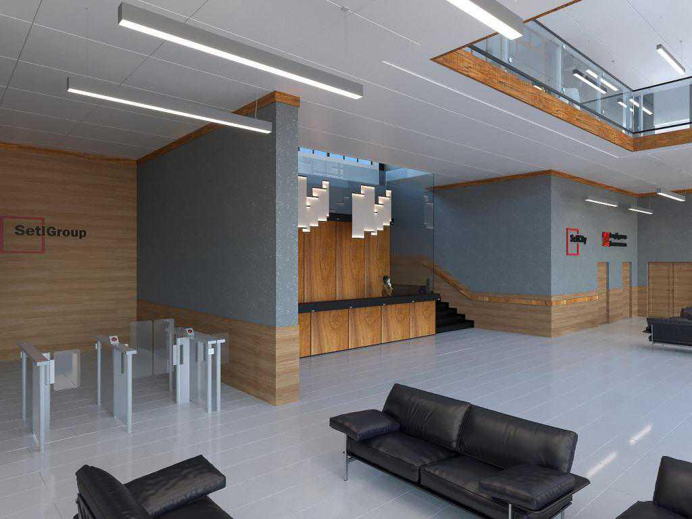

Selt City


Задача
Задача заключается в создании многофункционального интерьера с располагающей к
командной работе и обмену информацией атмосферой. Интерьер проектировался по системе design&build в
сжатые сроки. В процессе строительства и оценки стоимости на реализацию проекта было необходимо
адаптировать дизайнерские решения под выделенный бюджет.
Решение
Основная дизайн-идея проекта – концепция четырех стихий в архитектурном воплощении –
Aqua, Terra, Aura, Ignis. Именно так названы главные функциональные пространства клуба (переговорные
комнаты и конференц-зал). Отделки и освещение подбирались в соответствии с этой тематикой.
Особенностью переговорных являются дизайнерские элементы, соответствующие тематике каждого помещения –
концептуальная объемная волна в переговорной Aqua, декоративная «стена» из стилизованных кирпичей в
Terra, воздушное панно из деревянных реек с подсветкой в Aura. В конференц-зале Ignis шкаф для
складирования стульев поддерживает ассоциацию со стихией огня отделкой, имитирующей жженое дерево.
Санузлы отделены от общей зоны коридором и проницаемой перегородкой из деревянных ламелей, торцы которых
отделаны медью.






